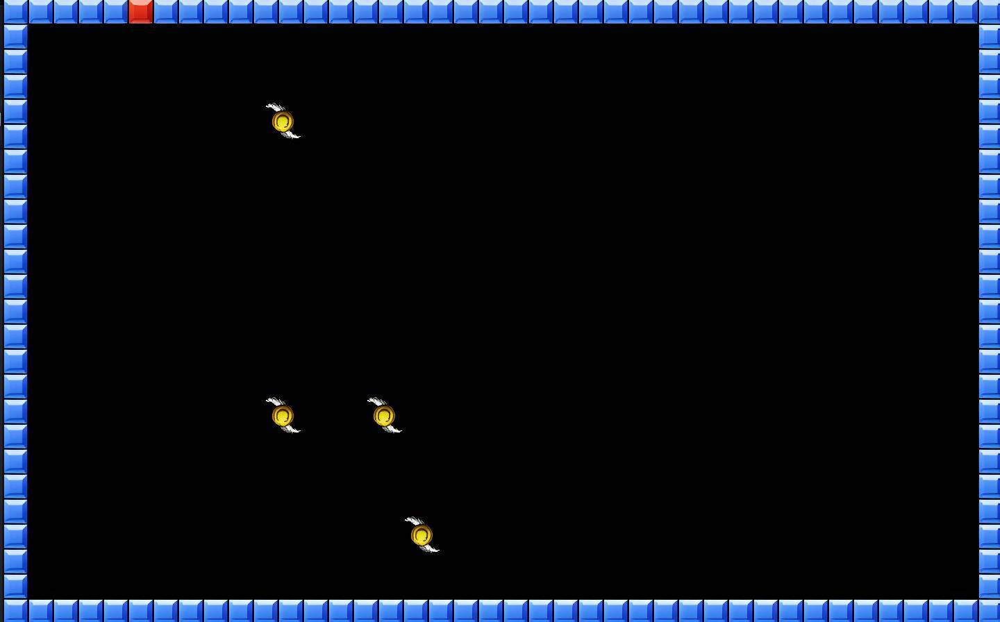

This page showcases the game development projects I have contributed to, including both personal and team-based works. Here you can explore my experience in game programming, gameplay mechanics, software architecture, and collaborative development processes.

Tetris
